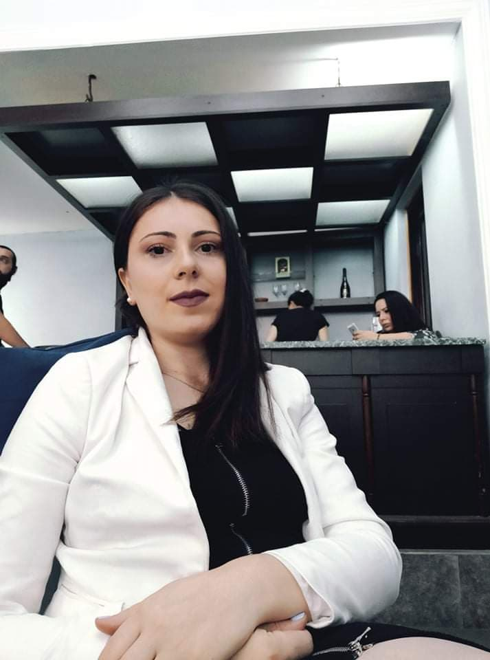

ჩიქოვანი მარიამი
მცხობელი, კულინარი
- მისამართი: ვარკეთილი3, მე-4 მიკრო, კორპ:403, მე-11 სადარბაზო, ბინა:173
- ტელეფონი: 568949852
- მეილი: lola.chiqovani@mail.ru
- პროფილი:
-
დავიბადე 1992 წლის 30 აპრილს.ბავშვობიდან ვცდილობდი, რომ დიდი და საზეიმო სადილის, ანუ ოჯახური სუფრის მომზადებაში მიმეღო მონაწილეობა. მომწონდა მზადების პროცესის ყურება. მარტივ დავალებებს მაძლევდნენ და მეც შემქონდა წვლილი საოჯახო ფუსფუსში.ბოლო წლების განმავლობაში აქტიურად დავიწყე ახალი კერძებისა ტუ დესერტების მზადება და ექსპერიმენტები სამზარეულოში. მივხვდი, რომ მომზადების პროცესის გარდა, კმაყოფილი ადამიანების ღიმილი და მადლობა ძალიან დიდ სიამოვნებას მანიჭებდა. ხშირად ვფიქრობდი, რა პროდუქტი რას მოუხდებოდა, რომელი გემო რომელს გაახალისებდა და ა.შ. დავიწყე ინფორმაციების მოძიება – მეტი ახალი რეცეპტის ათვისება (თუმცა ყველაზე დიდი სიამოვნება ჩემთვის ურეცეპტოდ მზადებაა, როდესაც ფანტაზია და შთაგონება მთავარი ინსტრუმენტია).მხოლოდ დიასახლისობიტ დაკავებულმა სახლშიც დიდი განოცდილება შევიძინე. ახლა კი მზად ვარ შემოვუერთდე თქვენს გუნდს! რაც შეეხება მოტივაციას ,ჩემი მთავარი მიზანია მოვხვდე თქვენს გუნდში,ვინაიდან მსმენია თქვენი მეგობრული, თბილი გარემოს შესახ, მსურს გავიღრმავო ცოდნა და თუნდაც ჩემი გამოცდილებით მცირედი შევმატო თქვენს გუნდს და გავხდე მადარტის განუყოფეი ნაწილი.
- სქილები:
-
- კულინარიული ცოდნა
- მაღალი პასუხისმგებლობა
- იმპროვიზაციის უნარი
- კოლექტიურად, ჯგუფში მუშაობის გამოცდილება
- კომუნიკაბელურობა
- გამოცდილება
-
შ.პ.ს. ,,გამა" კონსულტანტი
შ.პ.ს. ,,ბარაქა" მოლარე
ლისის გზაზე, მცხობელი
2016 წლიდან მოყოლებული ვმუშაობდი ლისის გზაზე არსებულ კულინარიულ დაწესებულებას. კერძოდ საოჯახო სამზარეულოში დაკავებული ვიყავი სხავდასხვა სახის საკვების მომზადებით. მიწევდა, როგორც ცომეულობასთან , ასევე საჭიროებსამებრ საოჯახო სამზარეულოში არსებულ თითქმის ყველა საკვებთან ურთიერთობა.